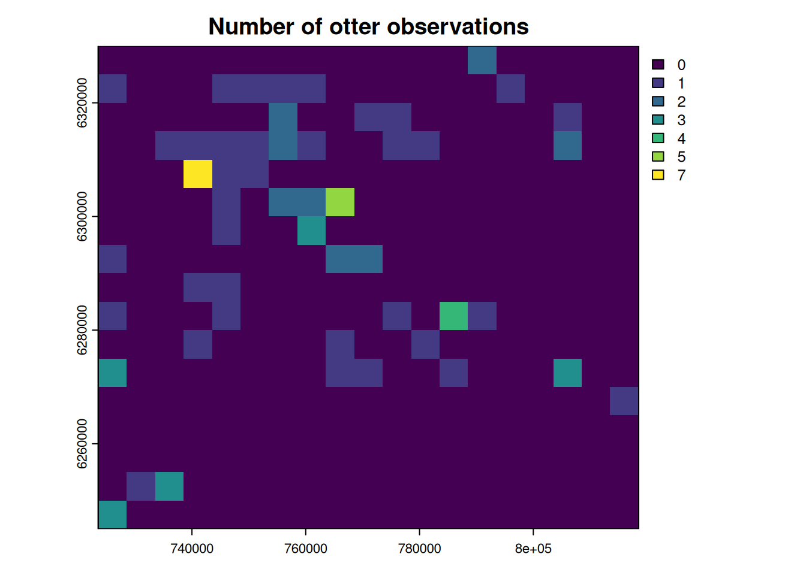
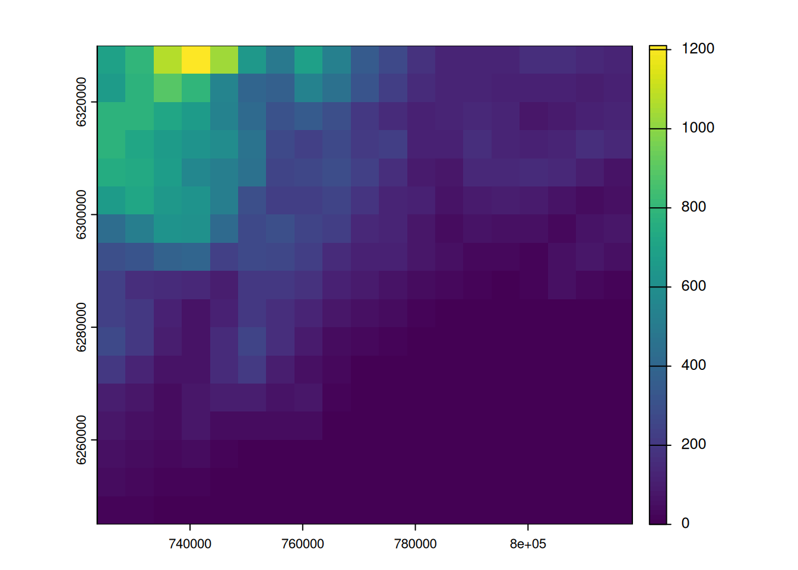
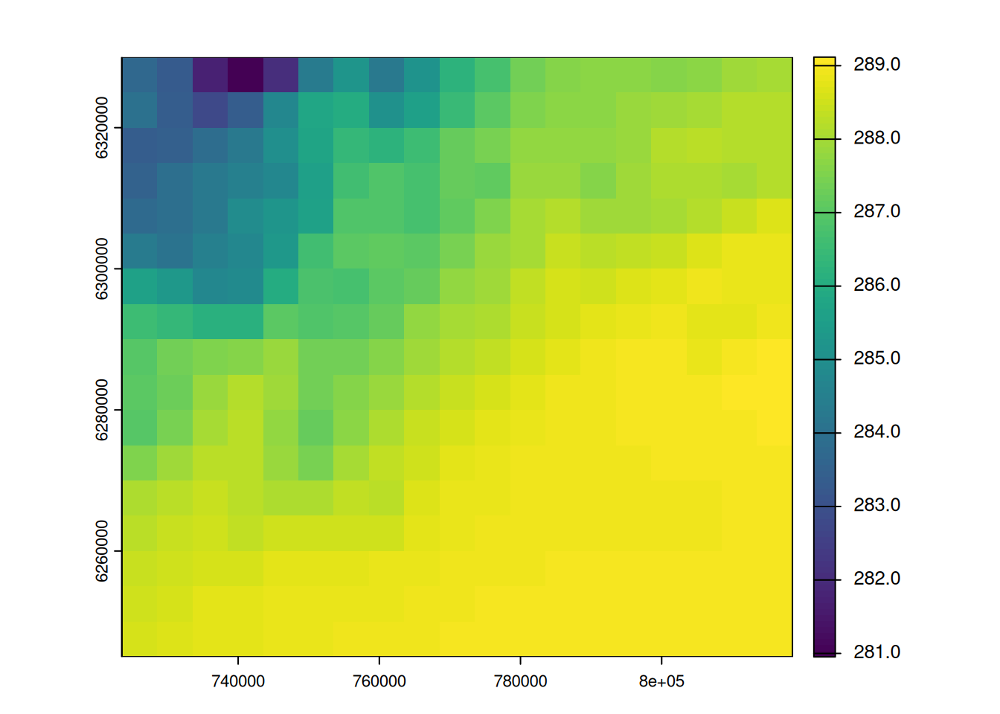
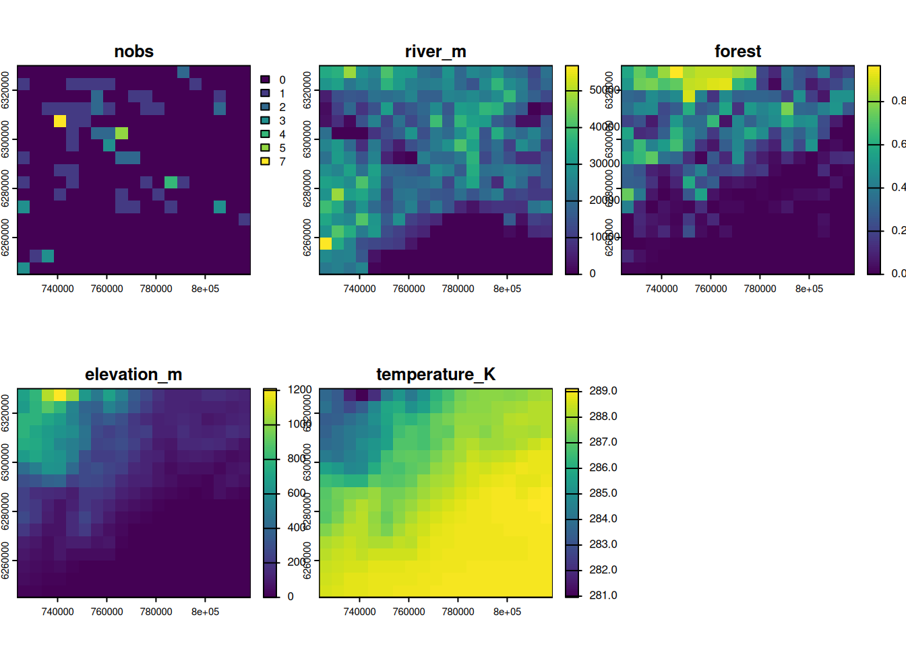
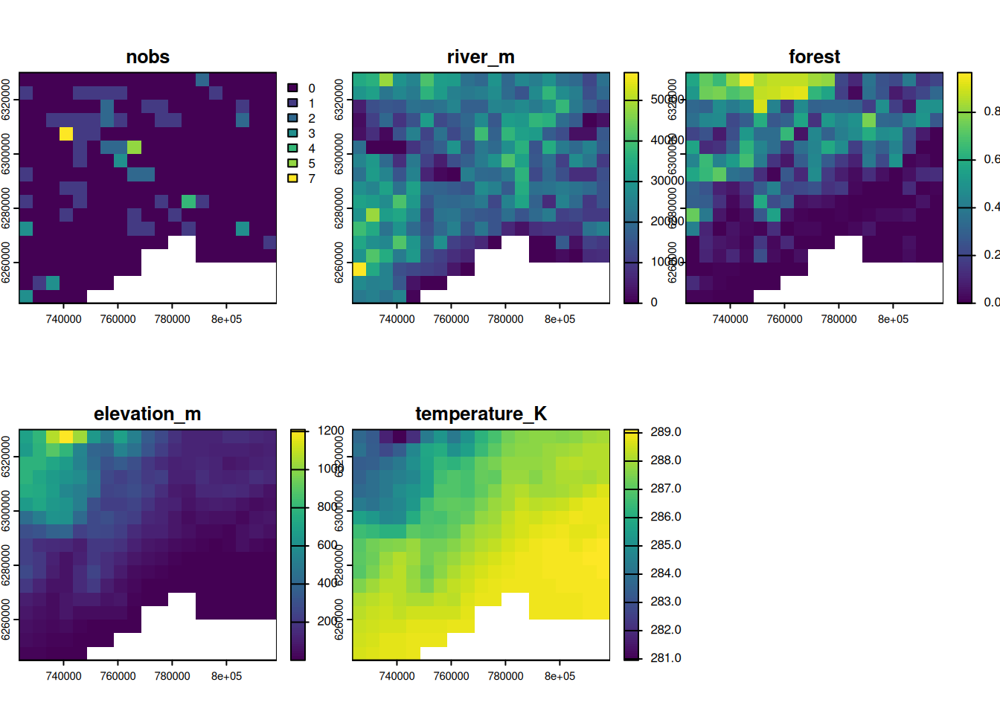
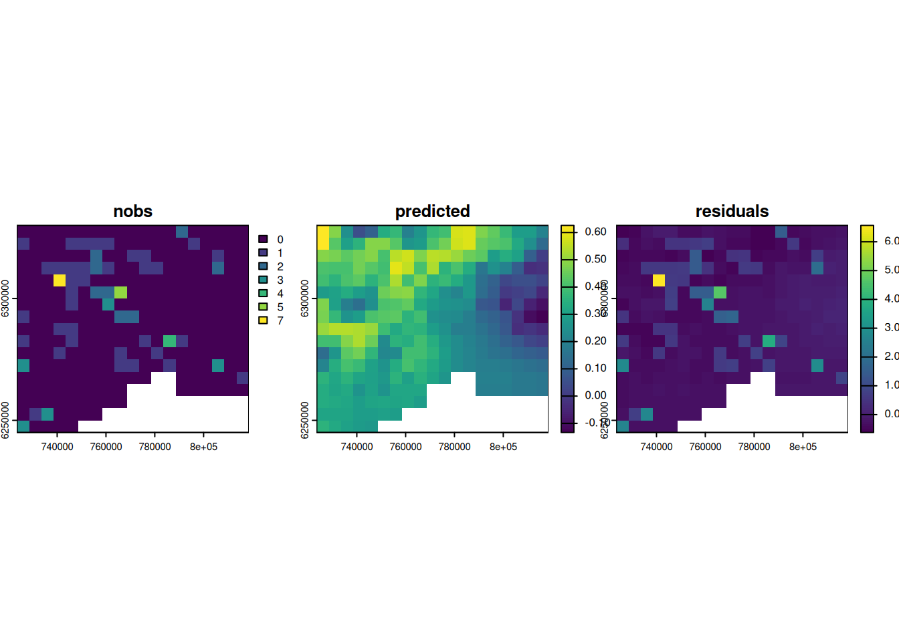

suppressPackageStartupMessages({
library(mapview)
library(here)
library(terra)
})Grid
ImportantSummary
This tutorial explore how to make a create a regular grid and transform spatial informations into a grid with terra package:
- project spatial data to a commun CRS with
terra::project()
- transform vectors to raster with
terra::rasterize() - match different raster grids with
terra::resample()
TipThe ecologist mind
For modeling, it is often needed to get all spatial data into a commun grid. For instance, among the spatial informations that we have seen in the previous chapter, which factors explain best the number of observations of otter?
Setup
Follow the setup instructions if you haven’t followed previous tutorials
If haven’t done it already, please follow the setup instructions.
Let’s start with loading the required packages.
Now load all the datasets attached to the observations of otters recorded in 2021 within a 50km buffer from Montpellier, France.
pt_otter <- vect(here("data", "gbif_otter_2021_mpl50km.gpkg"))
river <- vect(here("data", "BDCARTO-River_mpl50km.gpkg"))
landuse <- vect(here("data", "BDCARTO-LULC_mpl50km.shp"))
bdalti <- rast(here("data", "BDALTI_mpl50km.tif"))
temperature <- rast(here("data", "CHELSA_monthly_tas_2015_2021.tif"))Create a grid
One has to decide at which resolution should the grid be defined, and with which projection system. The decision depends on your dataset, its extent, and your modeling objectives.
In our case, we will create a grid of 5km around the otter observations using the Lambert-93 projection (EPSG:2154).
The function terra::rast() can create empty grid from the extent of a given spatial object. Here we provide the otter observation (projected in EPSG 2154) as the extent of our grid.
pt_2154 <- project(pt_otter, "EPSG:2154")
res <- 5000 # 5km grid
grid <- rast(pt_2154, res = res)
gridclass : SpatRaster
size : 17, 19, 1 (nrow, ncol, nlyr)
resolution : 5000, 5000 (x, y)
extent : 723524.6, 818524.6, 6245001, 6330001 (xmin, xmax, ymin, ymax)
coord. ref. : RGF93 v1 / Lambert-93 (EPSG:2154) Points to grid
The function terra::rasterize() transform vectors to raster. Its argument fun=count defines that the values in the cells are the number of points. The argument background=0 set that the value of the cell with no observation will be 0, instead of NA by default.
grid_nobs <- rasterize(pt_2154, grid, fun = "count", background = 0)
plot(grid_nobs, main = "Number of otter observations")
Lines to grid
To calculate the length of rivers within a grid cell, we use the function terra::rasterizeGeom(). Its argument fun=length defines that the values in the cells are the length of the rivers.
river_2154 <- project(river, "EPSG:2154")
grid_river <- rasterizeGeom(river_2154, grid, fun = "length")
plot(grid_river, main = "Length of rivers", plg = list(title = "(m)"))
Polygon to grid
To calculate the percentage of forest into the grid cell, we need first to consider only forest polygons. Then the function terra::rasterize() with the option cover=TRUE calculates the percentage of forest cover per grid cell.
# select only the forest
forest <- landuse[landuse$nature == "Forêt"]
# project the polygons
forest_2154 <- project(forest, "EPSG:2154")
# rasterize
grid_forest <- rasterize(forest_2154, grid, cover = TRUE, background = 0)
plot(grid_forest, main = "Forest cover", plg = list(title = "(%)"))
Resample raster
For rasters, we need to transform the original grid to the desired resolution and extent. This operation is done with the function terra::resample(). Be careful, this operation degrades the quality of the original raster. Each cells get the weighted average of the neighbouring cells
Elevation
grid_alti <- resample(bdalti, grid, method = "bilinear")
plot(grid_alti, main = "Elevation", plg = list(title = "(m)"))
Temperature
For CHELSA temperature rasters, we want a summary of 2021, so we will use the average temperature over the 12 months of 2021. So we will (1) select only layers that correspond to 2021 (year of the observations) (2) calculate the average, (3) project the raster, and (4) resample to the desired grid.
#1 select the layers corresponding to 2021
in_2021 <- grep("2021", names(temperature))
monthly_temp <- subset(temperature, in_2021)
#2. calculate the average temperature in 2021
annual_temp <- mean(monthly_temp, na.rm = TRUE)
# 3. project to EPSG 2154
temp_2154 <- project(annual_temp, "EPSG:2154")
# 4. resample to grid
grid_temp <- resample(temp_2154, grid, "bilinear")
plot(grid_temp, main = "Av. temperature", plg = list(title = "(K)"))
Merge all together
In terra, we can group SpatRaster objects into a single one if they all share the same grid. We will then get one grid and multiple layers (also called band) with the different informations.
out <- c(grid_nobs, grid_river, grid_forest, grid_alti, grid_temp)
# we rename the layers to keep information of units
names(out) <- c("nobs", "river_m", "forest", "elevation_m", "temperature_K")
outclass : SpatRaster
size : 17, 19, 5 (nrow, ncol, nlyr)
resolution : 5000, 5000 (x, y)
extent : 723524.6, 818524.6, 6245001, 6330001 (xmin, xmax, ymin, ymax)
coord. ref. : RGF93 v1 / Lambert-93 (EPSG:2154)
source(s) : memory
names : nobs, river_m, forest, elevation_m, temperature_K
min values : 0, 0.00, 0.0000000, 0.000, 280.9530
max values : 7, 56861.96, 0.9665119, 1210.254, 289.1167 plot(out)
NoteYour turn
Otters only inhabits terrestrial areas, yet our grid includes the Mediterranean Sea. Mask the created raster with the land boundary of France (as in the Chapter Rasters).
Click to see the answer
# get the border of the country (level = 0)
france_border <- readRDS(here("data", "gadm41_FRA_0_pk.rds"))# get the border of the country (level = 0)
france_border <- geodata::gadm("FRA", level = 0, path = here("data"))# project the coast in Lambert-93
france_2154 <- project(france_border, crs(bdalti))
# mask (=set to NA) the pixels that are not in the polygon
out_masked <- mask(out, france_2154)
plot(out_masked)
Simple linear model
The dataset is made of observations gathered without proper sampling schemes, and with potentially many biases. For such data, it is recommended to use species occupancy models (e.g. spOccupancy).
Yet for our little case study we will do the simplest linear model.
# transform the spatial raster data as data.frame
df <- data.frame(out_masked)
# make a simple linear model
m1 <- lm(nobs ~ river_m + forest + elevation_m + temperature_K, data = df)
summary(m1)
Call:
lm(formula = nobs ~ river_m + forest + elevation_m + temperature_K,
data = df)
Residuals:
Min 1Q Median 3Q Max
-0.6221 -0.3503 -0.2522 -0.0324 6.5679
Coefficients:
Estimate Std. Error t value Pr(>|t|)
(Intercept) 2.584e+02 8.709e+01 2.967 0.00327 **
river_m -6.591e-08 4.862e-06 -0.014 0.98920
forest -2.689e-01 2.718e-01 -0.989 0.32331
elevation_m -5.833e-03 2.081e-03 -2.803 0.00543 **
temperature_K -8.936e-01 3.014e-01 -2.965 0.00329 **
---
Signif. codes: 0 '***' 0.001 '**' 0.01 '*' 0.05 '.' 0.1 ' ' 1
Residual standard error: 0.7884 on 276 degrees of freedom
Multiple R-squared: 0.03659, Adjusted R-squared: 0.02262
F-statistic: 2.62 on 4 and 276 DF, p-value: 0.03531# to see how wrong the linear model is, look at:
# plot(m1)The linear model is definitely not a good fit to our data (R2 is only 0.03). Moreover, there is strong collinearity between elevation and temperature, and the residuals are not normally distributed. In generalized mixed models, it is recommended to use poisson or quasipoisson distribution for count data. The main issue here is the high number of ‘false’ zeros.
Additionally, it is recommended to spatially visualize the predictions and the residuals.
# set new empty grids
out_masked$predicted <- rast(grid)
out_masked$residuals <- rast(grid)
# add values of prediction and residuals where there is no NA
out_masked$predicted[!is.na(out_masked$nobs)] <- predict(m1)
out_masked$residuals[!is.na(out_masked$nobs)] <- residuals(m1)
# show and compare the observation, prediction and residuals
plot(out_masked, c("nobs", "predicted", "residuals"), nc = 3)